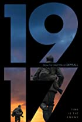

1.Parasite
- Rate: 8.6
- Director: Bong Joon Ho
- Writers: Bong Joon Ho (story), Bong Joon Ho (screenplay)
- Stars: Kang-ho Song, Sun-kyun Lee, Yeo-jeong Jo
the story :
and class discrimination threaten the newly formed symbiotic relationship between the wealthy Park family and the destitute Kim clan.

2.1917
- Rate: 8.3
- Director: Sam Mendes
- Writers: Sam Mendes, Krysty Wilson-Cairns
- Stars: Dean-Charles Chapman, George MacKay, Daniel Mays
the story :
April 6th, 1917. As a regiment assembles to wage war deep in enemy territory, two soldiers are assigned to race against time and deliver a message that will stop 1,600 men from walking straight into a deadly trap.

3.Irishman
- Rate: 7.9
- Director: Martin Scorsese
- Writers: Steven Zaillian (screenplay), Charles Brandt (book)
- Stars: Robert De Niro, Al Pacino, Joe Pesci
the story :
An old man recalls his time painting houses for his friend, Jimmy Hoffa, through the 1950-70s.